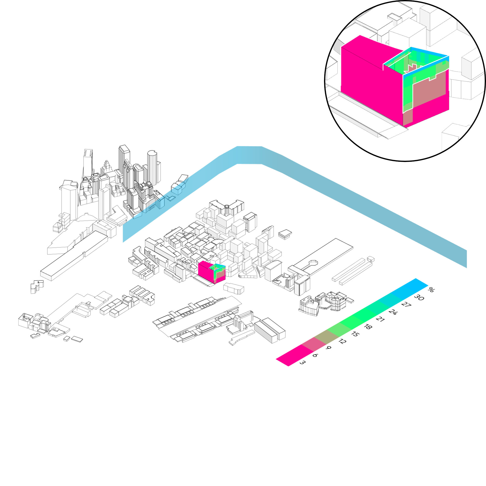
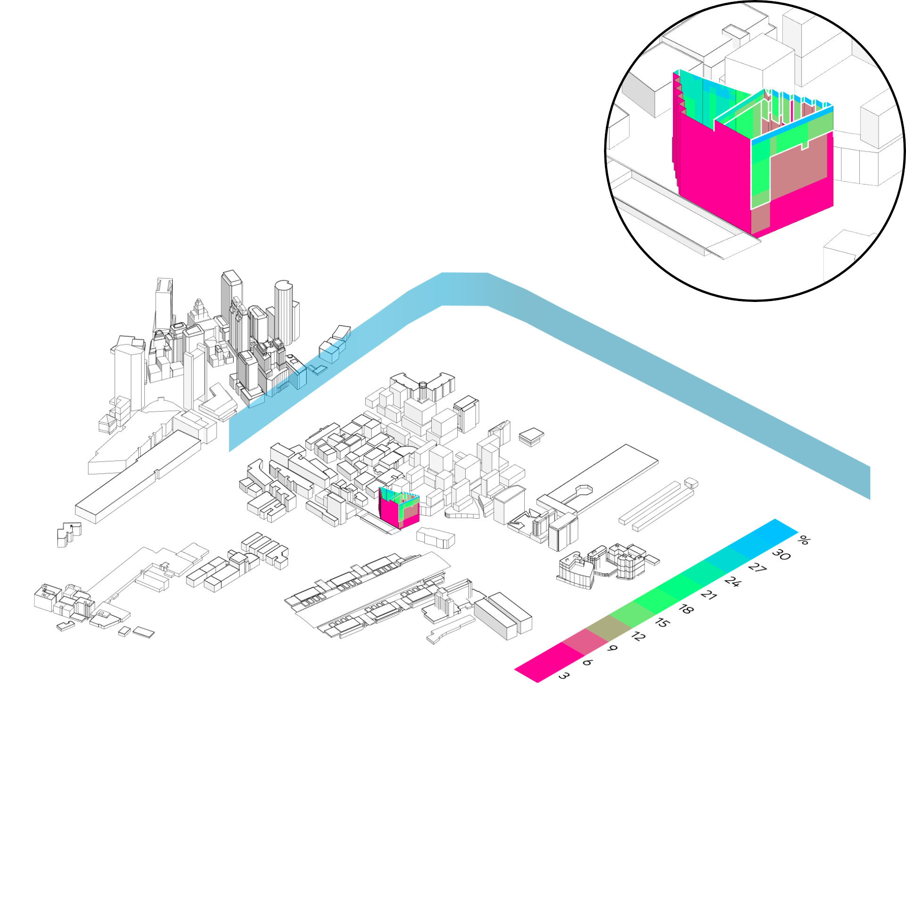

Aussicht
Ladybug
⬤ Ladybug bewertet Ausblickqualität durch Analyse von Sichtanteilen zu Attraktoren (Natur, Wasser, Stadtpanorama) vs. Barrieren (Gebäude, Infrastruktur). Fensterweise Erfassung je Geschoss quantifiziert Nah-, Mittel- und Fernsichten (natürlich/urban). Psychologische Wirkung auf Wohlbefinden und Therapieeffekte erfasst. Normgerecht nach EN 17037 – Qualitätsmaßstab für nachhaltige, humanzentrierte Architektur
⬤ Ladybug assesses view quality by analyzing the proportion of views of attractors (nature, water, city panorama) vs. barriers (buildings, infrastructure). Window-by-window recording for each floor quantifies near, medium, and distant views (natural/urban). Psychological effect on well-being and therapeutic effects recorded. Compliant with EN 17037 – quality standard for sustainable, human-centered architecture.